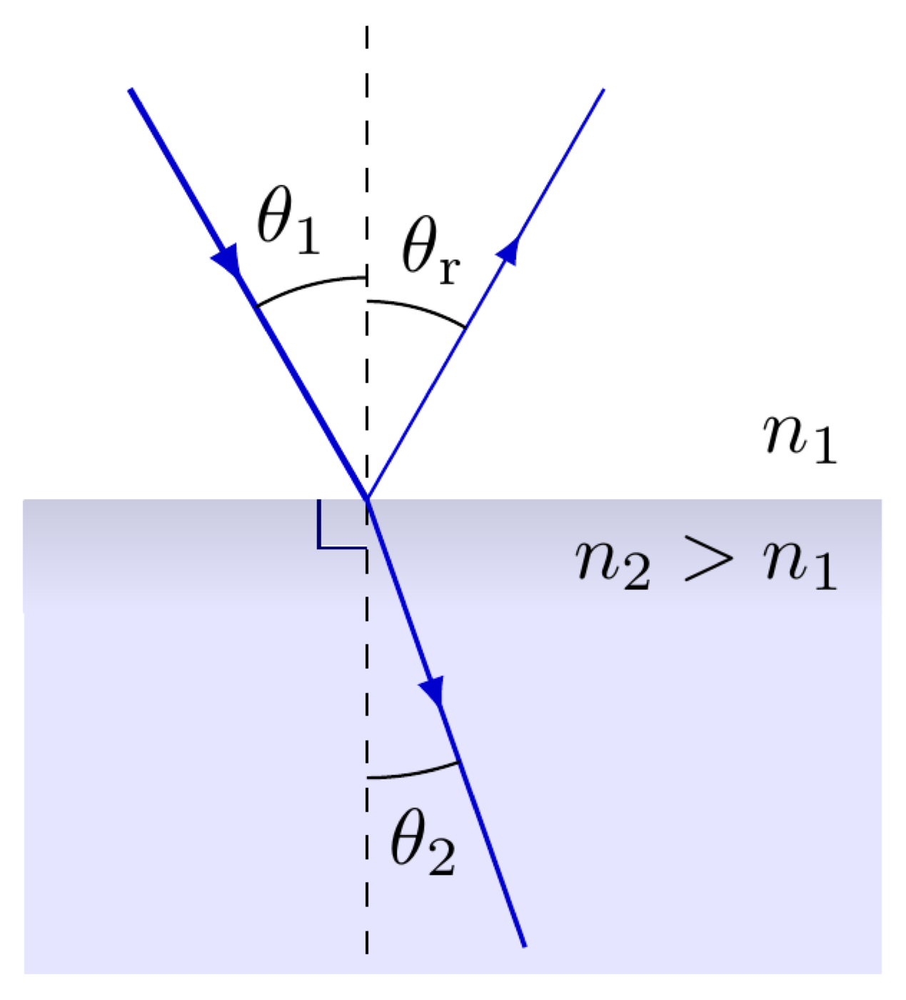
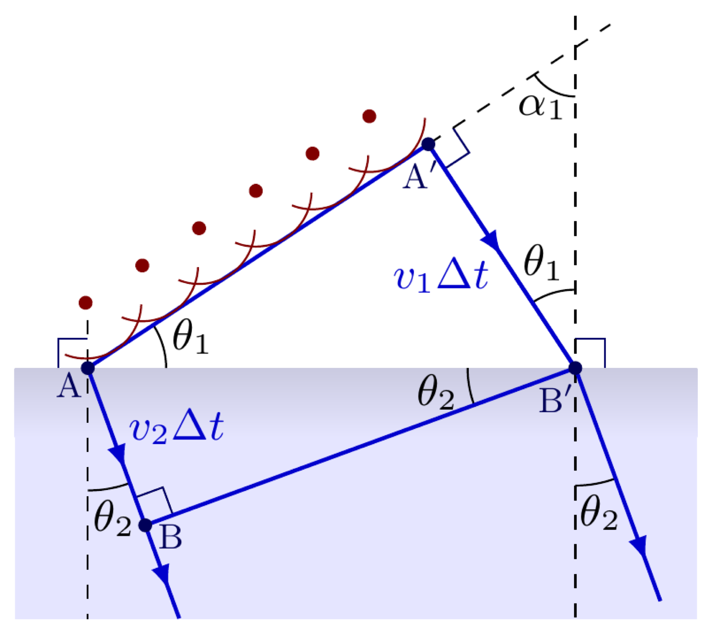
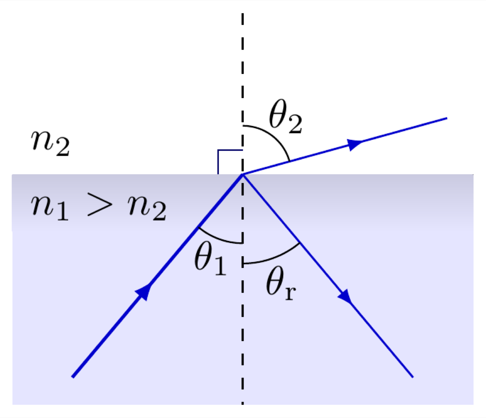
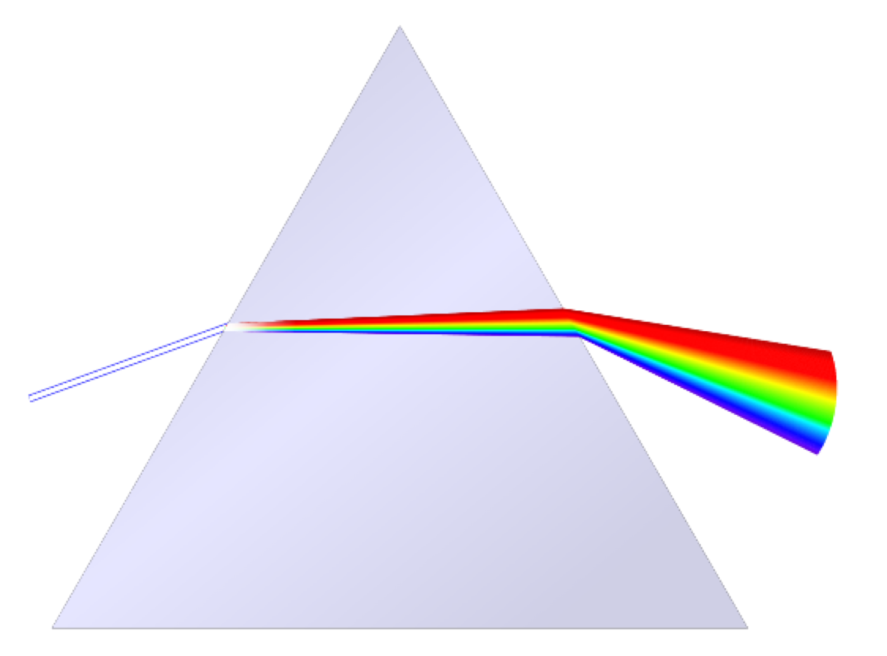

Setup
The day starts with Light Box, Part II, where a mirror sends the beam straight back the way it came. I swap the mirror for a clear acrylic block and ask what happens once light can pass through the boundary instead of bouncing off it. Same light box, same protractor, same beam. The only thing that's changed is what the beam is hitting.
What the Photo Shows
This is the one image every group actually produces and argues about, so it's worth reading carefully before anything gets named. A single beam leaves the light box and hits the acrylic block sitting on a protractor. From that one beam, four separate things are visible at once:

The question I want students building their own answer to, not repeating one, is why the beam bends toward the normal on the way in and away from it on the way out, why some light reflects instead of all of it refracting, and why the amount of bending depends on the material. Everything else in this lesson is building the pieces of that answer.
Two Things Happen at Every Boundary
Reflection and refraction aren't alternatives, they happen together, every time a wave meets a boundary between two media. \(\theta_1\) is the angle of incidence, \(\theta_\mathrm{r}\) the angle of reflection, \(\theta_2\) the angle of refraction, all measured from the normal, the line perpendicular to the boundary.

Reflection follows the same law it always does, \(\theta_1 = \theta_\mathrm{r}\), by the same Huygens construction used at the barrier in the ripple tank lesson. Refraction is the new piece: going into the denser medium, \(n_2 > n_1\), the beam bends toward the normal, \(\theta_2 < \theta_1\). None of that is arbitrary, and none of it needs to be memorized as a rule, it comes directly from treating the boundary as a place where the wavefront has to stay continuous while its speed changes.
Deriving Snell's Law from the Wavefront
Apply the Huygens–Fresnel construction directly at the boundary. Two points on the same incident wavefront, A and A\('\), are shown a moment apart: A has already reached the boundary while A\('\) is still on its way, still in the first medium.

In the time \(\Delta t\) it takes A\('\) to reach the boundary at B\('\), the wavelet launched from A has already been travelling into the second medium, covering a distance \(v_2\Delta t\) to reach point B. Both right triangles, AA\('\)B\('\) in the first medium and ABB\('\) in the second, share the same hypotenuse AB\('\). That shared hypotenuse is what ties the two angles together:
\[\sin\theta_1 = \frac{v_1\Delta t}{AB'}, \qquad \sin\theta_2 = \frac{v_2\Delta t}{AB'}\]
This is the same construction used already, in the ripple tank, to get the law of reflection, and the comparison is worth making directly. In reflection, both wavelets travel in the same medium, so \(v_1 = v_2\): same speed, same time interval \(\Delta t\), same distance travelled, which forces \(\theta_1 = \theta_\mathrm{r}\) exactly, because the two triangles are congruent. Refraction is the identical argument with one thing changed. The two wavelets are travelling in different media at different speeds, so in that same shared \(\Delta t\) they cover different distances, \(v_1\Delta t \ne v_2\Delta t\), which is the only reason the triangles stop being congruent and the angles stop matching. The time is the same on both sides of the boundary. The distance travelled is not, and that difference in distance, not a difference in time, is the entire argument for why refraction concludes the speed has changed while reflection concludes it hasn't.
Dividing one by the other cancels \(\Delta t\) and \(AB'\) entirely, leaving a relationship between the two angles and the two speeds alone:
\[\frac{\sin\theta_1}{\sin\theta_2} = \frac{v_1}{v_2} \qquad \Longleftrightarrow \qquad \frac{\sin\theta_1}{v_1} = \frac{\sin\theta_2}{v_2}\]
That's Snell's law already, in the form the geometry actually produces it, before any mention of a refractive index. The refractive index is just a convenient relabeling, defined loosely as \(n = c/v\), the ratio of light's speed in vacuum to its speed in that medium. Substituting \(v = c/n\) into the relation above and cancelling \(c\) gives the familiar form:
\[n_1\sin\theta_1 = n_2\sin\theta_2\]
Written this way it looks like a statement about indices. It's really a statement about speed, which is the way IB physics itself prefers to treat it, and the way this derivation builds it: the bend exists because the wave travels at a different speed on each side of the boundary, and the angle is just how that speed change shows up geometrically in a wavefront that has to stay unbroken across the boundary.
Frequency doesn't appear anywhere in that derivation, on purpose. The number of wavefronts arriving at the boundary per second has to equal the number leaving it per second, nothing is created or destroyed at the boundary, so \(f\) carries straight through unchanged. Speed changes, frequency doesn't, so \(v = f\lambda\) forces \(\lambda\) to change instead, exactly the same three-way relationship first built in the ripple tank, now doing the same job at a refracting boundary instead of a reflecting one.
Wave or Particle? A Historical Test
Refraction wasn't always understood as a wave phenomenon. Christiaan Huygens laid out the wave picture in 1690, in his Traité de la Lumière, and in it he described the construction used in the previous section: every point on a wavefront can be treated as the source of its own secondary wavelets, and the wavefront a moment later is what you get by adding all of those wavelets together. Huygens imagined the wave as carried by the ether, a weightless medium believed to fill all of space, an idea that stayed part of physics for another two centuries, elaborated on by Charles Wheatstone and James Clerk Maxwell among others, before being abandoned entirely. The wave construction itself outlived the ether it was originally invented to describe.
Isaac Newton preferred a different picture, that light is a stream of particles, and for over a century his corpuscular theory had the larger following. Both theories had to explain the same bend toward the normal, and they explained it in opposite ways. The wave picture says it directly: part of an angled wavefront reaches the denser medium first and starts moving slower there while the rest of the wavefront is still crossing the faster medium, and travelling at two different speeds along its own length is what turns it. The particle picture had no equivalent mechanism sitting inside it already. To make corpuscles bend toward the normal, Newton's followers proposed a force acting perpendicular to the boundary, pulling particles into the denser medium, a force with no independent evidence for it and no clear physical origin. Worse for that version of the theory, pulling particles in like that requires them to speed up entering the denser medium, the exact opposite of what the wave picture predicts.
Faster or slower is a testable difference, it just took until 1850 for anyone to measure the speed of light inside a medium precisely enough to settle it. Léon Foucault measured light's speed in water directly and found it slower than in air, matching the wave prediction and contradicting the particle one outright. It's one of the cleaner examples in the history of physics of two competing models making opposite, testable predictions, with a single measurement deciding which one was describing something real.
Huygens' construction had already done something else no stream of particles could easily explain, well before anyone could test the speed prediction. Two beams of light can cross paths and pass straight through each other, undisturbed, which is exactly what waves do when they meet, they superpose and separate again, but is not what a beam of colliding particles should do at all.
Why Light Actually Slows Down
\(n = c/v\) explains what changes without explaining why. The physical answer is about what the material's electrons are doing while the wave passes through. Every atom in a transparent material has electrons that respond to an electric field, and light's electric field is oscillating as it travels, so it drives those electrons into oscillation at the same frequency as the incoming light. Each oscillating electron behaves like a tiny antenna and radiates its own secondary electromagnetic wave.
A driven oscillator doesn't respond to a push the instant it happens, it lags slightly behind the field driving it. That means each electron's re-radiated wave is delayed a little relative to the wave that caused it. The wave that actually propagates forward through the material is the sum of the original field and every one of these slightly delayed secondary wavelets, and that sum behaves like a single wave advancing more slowly than light in vacuum, even though nothing inside the material is ever moving faster than \(c\) and no individual unit of light is literally being slowed down mid-flight. The delay is a collective effect of the whole medium continuously absorbing and re-radiating, not a speed limit imposed on light itself.
Exiting the Medium: The Same Rule, Reversed
The photograph's last bend, the beam leaving the acrylic and returning to air, is the same physics run backward. Going from a denser medium into a less dense one, \(n_1 > n_2\), the beam bends away from the normal instead of toward it, and its speed picks back up to whatever value that medium's electrons allow, in this case back to the speed light already had in air before it ever reached the block.

Nothing new needs deriving here. The same Huygens construction, the same \(\sin\theta_1/v_1 = \sin\theta_2/v_2\) relationship, and the same \(n_1\sin\theta_1 = n_2\sin\theta_2\) apply with the labels swapped, which is exactly why the beam in the photograph exits parallel to its original direction rather than at some unrelated angle: it crossed into a slower medium and back out of it, and the two bends undo each other's geometry.
Energy Splits Too
The faint reflected beam in the photograph isn't a measurement error or stray light. At every boundary between two media, the incident wave's energy genuinely splits: some fraction reflects, the rest refracts through. Exactly how much goes each way depends on the angle of incidence and the two refractive indices, but the split itself happens at every boundary, every time, whether the mismatch in speed is large or small.
That splitting is what sets the intensity of each beam. A brighter refracted beam and a dimmer reflected one, or the reverse, is a direct read on how the incident energy divided at that specific boundary. Nothing about the light is lost between the incident beam and the two beams leaving the boundary, the energy is simply shared between a reflected path and a refracted one instead of travelling down a single path the way it did before the light arrived.
Why the Colors Split
Send white light through a triangular prism instead of a flat block and the exit beam fans out into a full spectrum, red bending least, violet bending most, every color in between falling in order.

Section 05 already has the mechanism, it just needs one more piece. How far an electron's re-radiated wave lags behind the field driving it depends on how close that field's frequency is to the electron's own natural resonance frequency: closer to resonance means a stronger, more delayed response. That means the refractive index is not one fixed number for a material, it's a function of frequency, \(n(\omega)\). For ordinary glass or acrylic, the relevant electronic resonances sit up in the ultraviolet, past the violet end of the visible spectrum, so moving from red toward violet moves every color a little closer to that resonance, strengthening the response and raising \(n\) as it goes. Violet ends up with the largest refractive index of the visible colors, and by \(n_1\sin\theta_1 = n_2\sin\theta_2\), the largest \(n_2\) bends the most.

The Takeaway
Every piece of this lesson was already sitting in the ripple tank. The source still fixes the frequency. The medium still fixes the speed. Changing the speed still forces the wavelength to change to keep \(v = f\lambda\) true, and the wavefront still has to stay unbroken across a boundary, which is what turns a speed change into a bend. Refraction isn't a new topic bolted onto waves, it's the same wavefront construction crossing into a new medium instead of bouncing off a barrier.
The explanation for why the angles turn toward or away from the normal was never handed to the class as a rule. It was built, from the same Huygens construction used on the ripple tank, checked against a real photograph of a real beam bending exactly where the geometry says it should, both entering the block and leaving it. That's the same shape every lesson in this course has followed: propose the mechanism, then find it confirmed in front of you, in the room, before being asked to trust it.